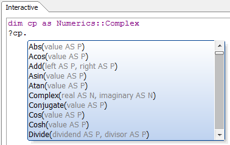

DotNet Example: Complex Numbers
This sample demonstrates using a Class file, and also loading, registering and using a .NET class from a DLL in the standard location. It also demonstrates using a constructor to load a value into a .NET class when it is created.Xbasic lacks native support for complex arithmetic, but the .NET Framework has it. Now you can perform calculations with complex numbers from Alpha Anywhere, using the .NET System.Numerics.Complex class.
Create and save the class file Numerics.Complex:
dim Sv as DotNet::Services
dim assy as DotNet::AssemblyReference
assy.filename = DotNetPath()+"System.Numerics.dll"
Sv.RegisterClass("Numerics", "Complex", "System.Numerics.Complex", assy)Once you DIM a variable as Numerics::Complex, you will be able to browse the .NET class interactively:

Run the following interactive session:
dim cp as Numerics::Complex dim cval as Numerics::Complex = new Numerics::Complex(1.0, -1.0) ?cval.ToString() = "(1, -1)" ?Numerics::Complex.Abs(cval) 'static method doesn't need instance = 1.41421 ?cp.Abs(cval) 'using the instance works just the same = 1.41421 ?cp.Acos(cval).ToString() = "(0.904556894302381, 1.06127506190504)" ?cp.Multiply(cval,cval).ToString() = "(0, -2)" ?cp.Add(cval,cval).ToString() = "(2, -2)" ?cp.Conjugate(cval).ToString() = "(1, 1)" ?cval.Real = 1 ?cval.Imaginary = -1 ?cp = PUBLIC STATIC Abs AS N (value AS P) 'Abs PUBLIC STATIC Acos AS P (value AS P) 'Acos PUBLIC STATIC Add AS P (left AS P, right AS P) 'Add PUBLIC STATIC Asin AS P (value AS P) 'Asin PUBLIC STATIC Atan AS P (value AS P) 'Atan PUBLIC Complex(real AS N, imaginary AS N) 'Public Constructor PUBLIC STATIC Conjugate AS P (value AS P) 'Conjugate PUBLIC STATIC Cos AS P (value AS P) 'Cos PUBLIC STATIC Cosh AS P (value AS P) 'Cosh PUBLIC STATIC Divide AS P (dividend AS P, divisor AS P) 'Divide PUBLIC Equals AS L (obj AS P) 'Equals PUBLIC STATIC Exp AS P (value AS P) 'Exp PUBLIC STATIC FromPolarCoordinates AS P (magnitude AS N, phase AS N) 'FromPolarCoordinates PUBLIC GetHashCode AS N () 'GetHashCode PUBLIC GetType AS P () 'GetType PUBLIC STATIC Log AS P (value AS P) 'Log PUBLIC STATIC Log10 AS P (value AS P) 'Log10 PUBLIC STATIC Multiply AS P (left AS P, right AS P) 'Multiply PUBLIC STATIC Negate AS P (value AS P) 'Negate PUBLIC STATIC Pow AS P (value AS P, power AS N) 'Pow PUBLIC STATIC Reciprocal AS P (value AS P) 'Reciprocal PUBLIC STATIC ReferenceEquals AS L (objA AS P, objB AS P) 'ReferenceEquals PUBLIC STATIC Sin AS P (value AS P) 'Sin PUBLIC STATIC Sinh AS P (value AS P) 'Sinh PUBLIC STATIC Sqrt AS P (value AS P) 'Sqrt PUBLIC STATIC Subtract AS P (left AS P, right AS P) 'Subtract PUBLIC STATIC Tan AS P (value AS P) 'Tan PUBLIC STATIC Tanh AS P (value AS P) 'Tanh PUBLIC ToString AS C () 'ToString Imaginary = 0 +ImaginaryOne. Magnitude = 0 +One. Phase = 0 Real = 0 +Zero.
See also
MSDN documentation on the Complex class.NET Framework Support in Alpha Anywhere
DotNet::AssemblyReference
DotNet::Services
CreateObject Method
CallStaticFunction Method
ConstructGenericTypeName Method
GetStaticProperty Method
SetStaticProperty Method
RegisterClass Method
RegisterAssembly Method
RegisterNamespace Method
GenerateWebServiceClientFromURL Method
GenerateWebServiceClientFromWSDL Method
Preloaded .NET Classes
Writing Xbasic wrapper classes for .NET classes
DotNetPath Function
DotNet Examples